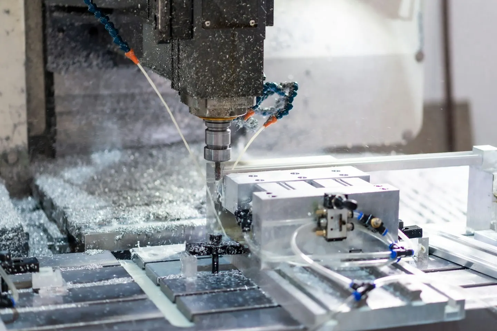
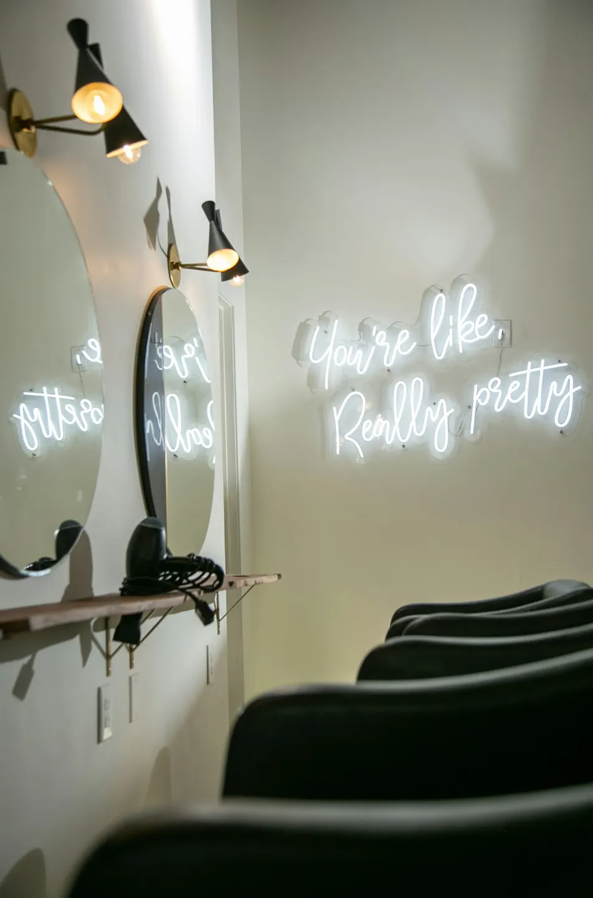
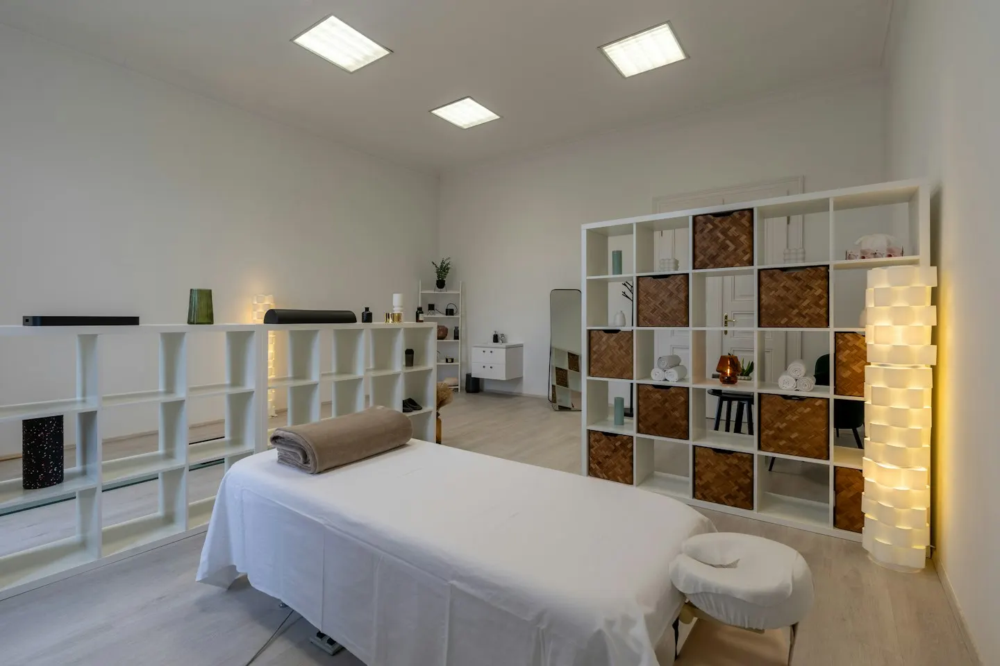
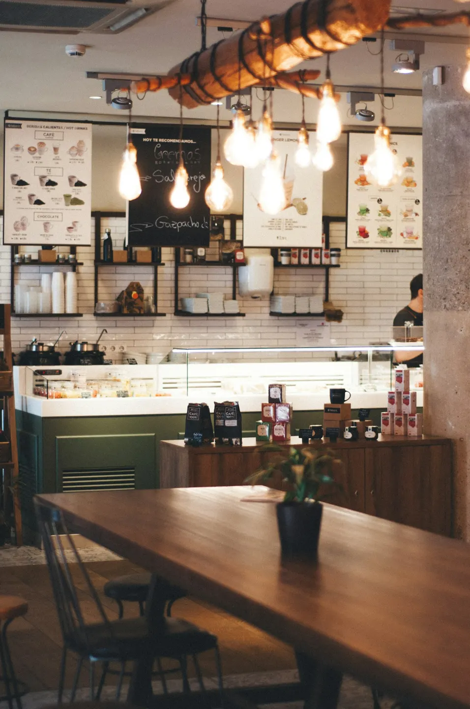
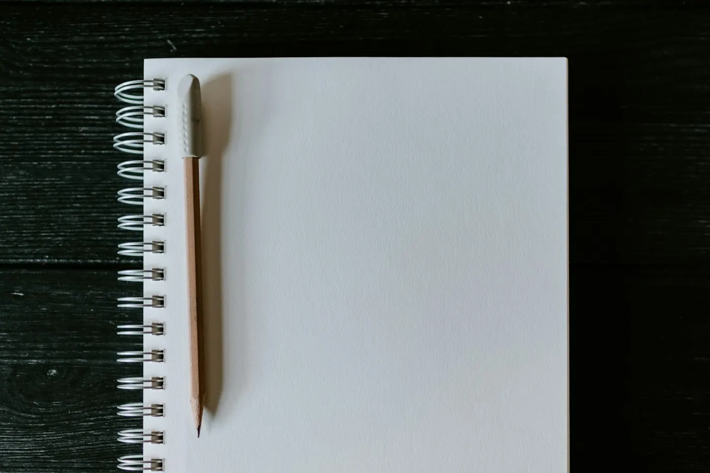

ことは工務店
家は、
ことばから
建てる。
ことは工務店
- 想定依頼主
- 注文住宅とリフォームを手がける地域の工務店
- 目的
- 見学会予約・資料請求・家づくり相談
- 対応範囲
- 構成・文章・デザイン・HTML/CSS/JS・スマホ対応
縦書きと写真の重なりで木の家の雰囲気を表現。部屋を押せる間取り図から、設計の考え方を伝えます。
小さな会社とお店の、ホームページ制作
お店の雰囲気、会社の強み、頼めること。
見る人が知りたい順番に整理して、
スマホでも使いやすいホームページに。
構成・文章の下書き / デザイン / HTML・CSS / レスポンシブ対応
SELECTED WORKS
掲載している8作品は、すべて架空の事業者を想定した制作サンプルです。実案件の実績ではありません。
デザインだけでなく、各業種の目的に合わせた情報の順序と導線をご覧ください。
家は、
ことばから
建てる。
縦書きと写真の重なりで木の家の雰囲気を表現。部屋を押せる間取り図から、設計の考え方を伝えます。

図面の意図まで、
加工につなぐ。
加工内容、設備、検査の情報を分離。材質・数量・図面の条件を整理して相談できる構成です。

髪を整える。
朝が、少し軽くなる。
縦長写真と余白を使った編集的な構成。料金だけでなく所要時間も示し、予約前の迷いを減らします。
毎月の数字を、
次の判断に。
落ち着いた紺色と明朝で、相談のしやすさを表現。担当者・料金の内訳・年間費用例を整理します。

まずは、
今の体のことから。
施術室の写真、来院の流れ、料金を見やすく配置。効果や評価の断定を避け、予約前の不安に答えます。

珈琲と、
ひと息。
写真と和文の組み合わせで静かな店の空気を表現。お品書きと営業時間を探しやすくまとめます。
週末を、掃除だけで
終わらせない。
作業範囲と対象外を併記。清掃箇所を選ぶと概算が変わり、その内容を相談フォームへ引き継ぎます。

今日の一問から、
始めよう。
学年別コースと初月の費用を明確に。合格実績に頼らず、授業の進め方と一週間の学習例を示します。
サンプル内の予約・問い合わせは入力確認のデモです。実際の送信・予約・資料発送は行いません。工務店A・Bは同じ案件の別案として、1作品にまとめています。
APPROACH
見た目を整える前に、誰が、何を知りたくて訪れるのかを考えます。ご相談から公開まで、確認する内容を段階ごとに整理します。
料金や対応範囲、営業時間など、検討に必要な情報を整理します。写真や文章が揃っていない場合も、必要な素材を一緒に確認します。
文字の大きさやボタンの押しやすさを確認。メニューや問い合わせまでの導線を、画面幅に合わせて調整します。
ページ数、機能、原稿、修正の範囲をお見積もりにまとめます。公開後に更新したい内容も、制作前にお聞かせください。
PRICE GUIDE
ページ数・掲載内容・必要な機能をうかがい、対応範囲と正式な金額をお見積もりします。
1ページで伝える
情報を分けて伝える
今あるサイトを整える
表示額は制作費の目安です。税込・税別の扱いを含め、契約前に見積書で総額を確認します。サーバー・ドメイン・有料素材・外部サービス利用料は別途。フォームの実送信や予約システムの連携は、利用サービスと費用を確認してから実装します。
WORKFLOW
作業ごとに確認する内容を整理し、完成までの見通しを共有します。
Web design & development
小さなお店や地域の会社に必要な情報を、分かりやすく整理するホームページ制作に取り組んでいます。文章の下書きから画面の調整まで、ご相談いただけます。
LET’S TALK
このポートフォリオをご案内した、ランサーズ・クラウドワークスのメッセージへご返信ください。
業種、作りたいページ、ご希望の時期が分かると、ご案内がスムーズです。
プロフィールからお越しの方は、元のランサーズ・クラウドワークスのプロフィールページへ戻り、メッセージ機能から新規のご相談をお送りください。まだ応募やお取引がない方も、ご相談いただけます。
ご相談時のメモ